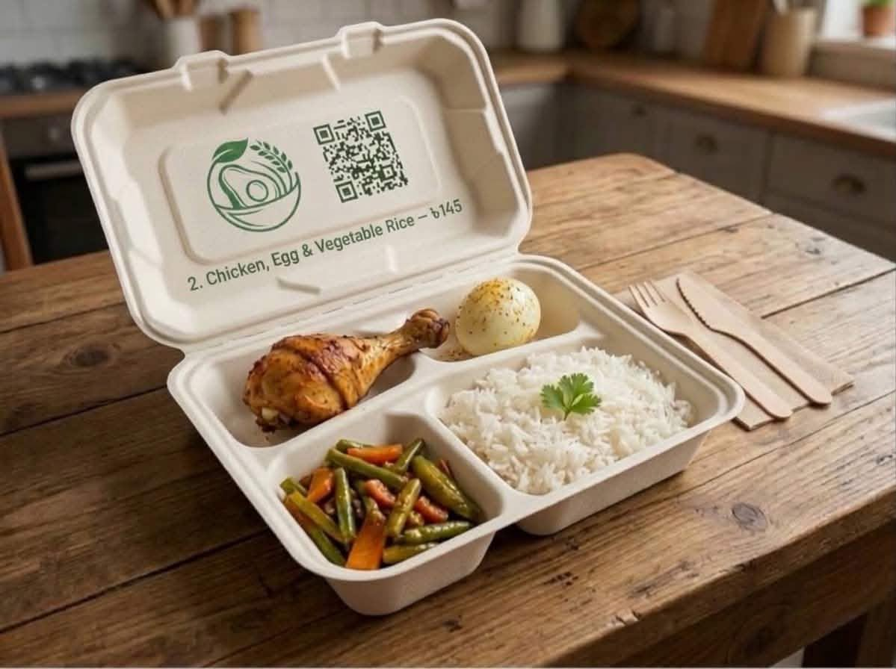

Nutrition you
can read before
you eat.
A healthier alternative to oily, guesswork campus food. Familiar Bangladeshi meals with measured oil, balanced portions and the nutrition shown beside every plate - from ৳50.

Campus food in Dhaka is usually affordable or healthy - rarely both. Most of it is fried and oily, and none of it tells you what you're eating.
of 1,480 students at six public universities reported low or very low food security.
[1] Six-university student surveyof 428 students regularly used nutrition labels - and only 32.5% showed satisfactory nutrition knowledge.
[2] University student surveyof young adults aged 19–34 are overweight, while undernutrition persists: a double burden.
[3] Adults aged 19–34, BangladeshThe food you love,
made kinder to you.
Nutri Café isn't a diet. It's the everyday campus meal, rebuilt so it fuels you instead of weighing you down.
- Less oil, measured
Every box gets a measured spoon of oil, not a pour. Our lunches use 8–12 ml; the salad bowl uses none.
- Balanced plates
Measured rice, a real portion of protein and vegetables, guided by Bangladesh's Food-Based Dietary Guidelines.
- Food you can read
Calories, protein, carbs, fat and fibre beside every plate, so choosing well takes seconds.
- Healthy every day, not once
From ৳50 - because good food only helps if you can afford to eat it daily.
Both calculated with our nutrition calculator from the same weighed recipe; only the oil changes.
Try it yourself in the calculatorEvery plate
comes with a label.
A standardised recipe
Each dish follows one fixed recipe. Every ingredient - including the oil - is weighed for every box.
Calculated nutrition
Calories, protein, carbohydrate, fat and fibre come from the Food Composition Table for Bangladesh and USDA data.
Readable at the counter
The label sits beside the dish and behind a QR code, so you can compare before you pay.
Guided by dietary guidelines
Recipes are aligned with Bangladesh's Food-Based Dietary Guidelines and reviewed by a nutritionist.
Pick the plate
that fits your day.
Every dish belongs to one of three plates, so you can choose by how you feel and what's ahead - not by guesswork.
What does a spoon of oil really add?
Put together a typical campus lunch and watch the numbers change. Then take it into the full calculator to fine-tune it.
Find us at
ULAB.
Our outlet is on campus at the University of Liberal Arts Bangladesh. Look for the label beside every dish, or scan its QR code for the full recipe.
- University of Liberal Arts BangladeshMohammadpur, Dhaka
- Breakfast & lunchServed on campus days
- Students, staff & facultyEveryone on campus is welcome
- Group & event ordersFrom 10 boxes, picked up or delivered by Pathao
Curious about
what you eat?
Good to
know.
Can't find your answer? Ask at the counter, or leave a comment on any dish page.
They are calculated, not lab-tested. Every ingredient in a box is weighed, and its nutrition is worked out from the Food Composition Table for Bangladesh and USDA data. Small differences in egg size or the vegetable mix can move the numbers a little, so treat them as close estimates.
Between none (the Egg, Chickpea & Salad Bowl) and 12 ml for our lunches. It is measured for every box and included in the fat figure on the label.
Every lunch uses a weighed 200 g of cooked rice. Fixing the portion is what makes the label true - the number you read is the plate you get.
Each dish page lists its allergens - egg, fish and mustard appear on our current menu. Everything is cooked in one kitchen, so tell the counter about any serious allergy before ordering.
Yes. Group orders start at 10 boxes - for a study group at home or hundreds for an event - with pickup from our ULAB counter or Pathao delivery for ৳100. You'll see the exact total before paying by bKash or bank transfer. Start a group order
Please do. Open any dish in our nutrition calculator to see every ingredient and its weight, and compare with USDA FoodData Central, Cronometer or MyFitnessPal.
Eating together?
Order for your group.
Healthy, labelled meal boxes for everyone at the table - ten for a study group at home, or two hundred for a seminar. See the exact amount before you pay.
Start a group order →